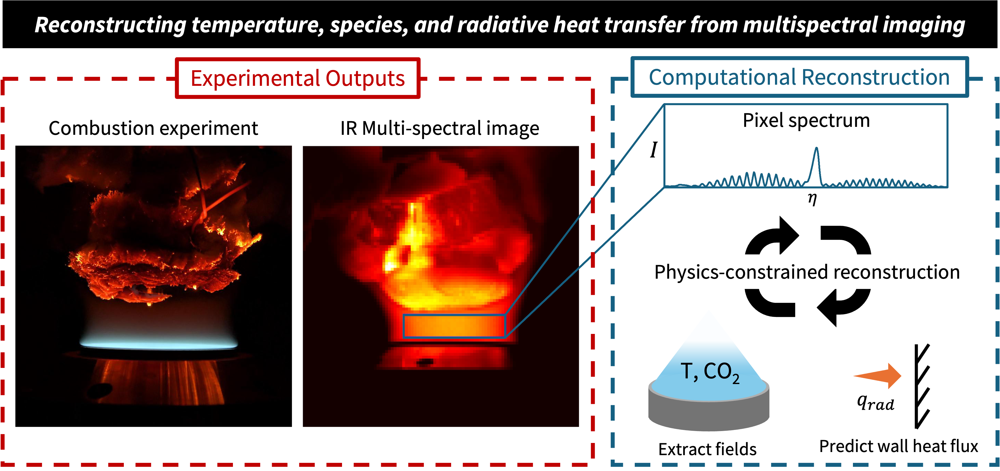
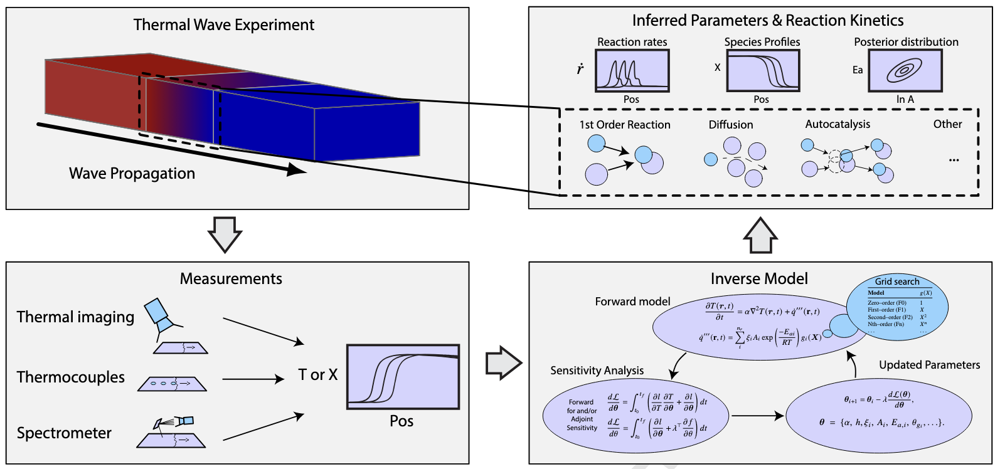
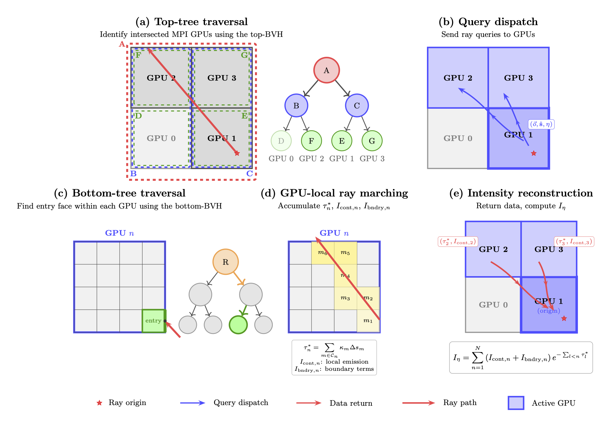

2023–2027
MIT · Ph.D. Researcher in Differentiable Physics and Scientific ML
Developing differentiable simulation, inverse-modeling, and uncertainty-quantification methods for reacting and thermal-fluid systems.
Ph.D. Candidate, Mechanical Engineering · Massachusetts Institute of Technology
I develop computational methods for inverse problems, radiative transport, and thermal-fluid simulation. My work combines physical models, experimental data, and high-performance computing across GPU and TPU systems.
Former Google Research simulation researcher · GE Vernova Fellow (2025–2026)
I formulate difficult physical problems, build differentiable or accelerated methods to solve them, and validate the resulting systems on experimental and engineering applications.

Built radiative-transfer and spectroscopy models that jointly infer temperature, composition, calibration parameters, and uncertainty from indirect optical measurements—including real ammonia/methane flame experiments.

Developed PDE-constrained inference methods to recover reaction pathways, kinetics, and transport parameters from sparse thermal-wave observations, with uncertainty and identifiability built into the formulation.
Built a distributed Lagrangian particle-tracking system for wildfire CFD in Google’s Swirl-LM, scaling dynamic particle workloads across 256 TPU cores under XLA static-shape constraints.

Led development of manually constructed C++ radiative-transport codes using Kokkos, MPI decomposition, and BVH traversal to scale non-gray Monte Carlo ray tracing across roughly 2,000 GPUs while mitigating communication bottlenecks.
Methods and software architecture are inseparable in my work: the model must be both scientifically useful and practical at accelerator scale.
Differentiable ODE, PDE, spectroscopy, and rendering models for gradient-based inference and system identification.
Sparse reconstruction, Bayesian uncertainty quantification, and model discovery for physical systems.
Scientific software from custom GPU kernels to multi-node communication design and compiler-level performance investigation.
High-fidelity modeling of fluid flow, combustion, radiative transfer, heat transfer, and multiphase transport.
A focused selection spanning differentiable inference, experimental diagnostics, accelerated modeling, and thermal-fluid systems.
Tricard, N., Shanbhogue, S., Cherry, M., Chen, Z., Guerra-Garcia, C., Ghoniem, A., & Deng, S. Proceedings of the Combustion Institute.
Tricard, N., Chen, Z., & Deng, S. arXiv ↗
Chen, Z., Tricard, N., & Deng, S. Proceedings of the Combustion Institute. DOI ↗
Tricard, N. & Bojko, B. Journal of Propulsion and Power. DOI ↗
Tricard, N., Fraga, G., & Zhao, X. Proceedings of the Combustion Institute. DOI ↗
Tricard, N. & Deng, S. High Performance Software Foundation Convention, Kokkos user group meeting, Chicago, IL, March 19.
Research roles spanning mathematical formulation, scientific software, performance engineering, and experimental validation.
Developing differentiable simulation, inverse-modeling, and uncertainty-quantification methods for reacting and thermal-fluid systems.
Built distributed TPU particle simulation for multiphase wildfire CFD within Swirl-LM.
Developed numerical capabilities for a CUDA-accelerated discontinuous-Galerkin reacting-flow solver.
Led development of multi-GPU Monte Carlo radiation solvers coupled with CFD.
I am a Ph.D. candidate in Mechanical Engineering at MIT. My research combines physical simulation, inverse problems, and high-performance computing. I've built models for reconstructing temperature, composition, kinetics, and transport from indirect measurements, alongside distributed simulation systems spanning GPUs and TPUs.
This work includes spectroscopy, PDE-constrained inference, multi-TPU particle transport at Google Research, and multi-GPU Monte Carlo radiative transfer.
ESSCI Research Fellow — Competitive award for collaborative work in flame tomography, June 2026–May 2027. Previously a GE Vernova Fellow (2025–2026).